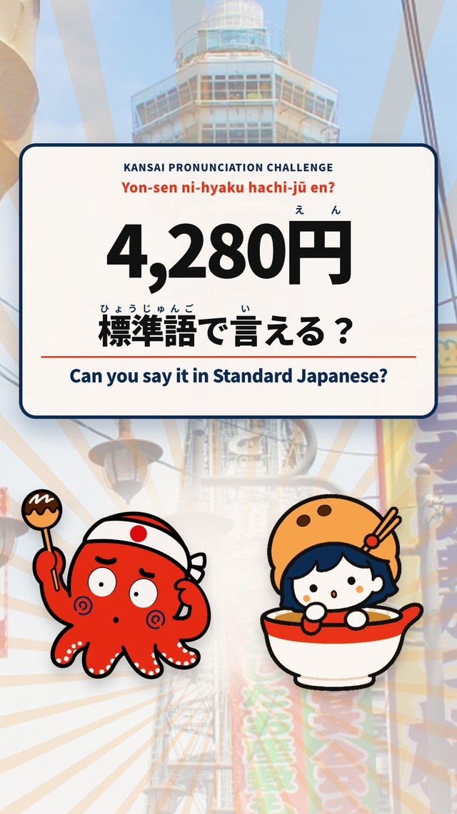
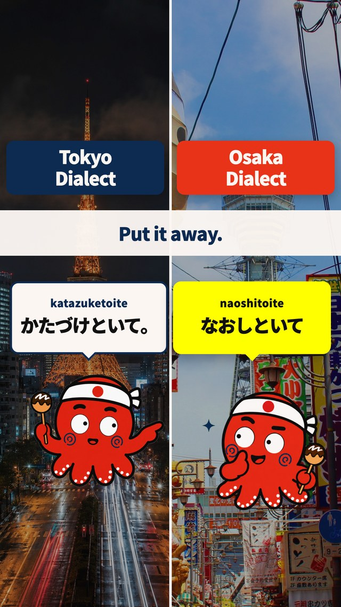
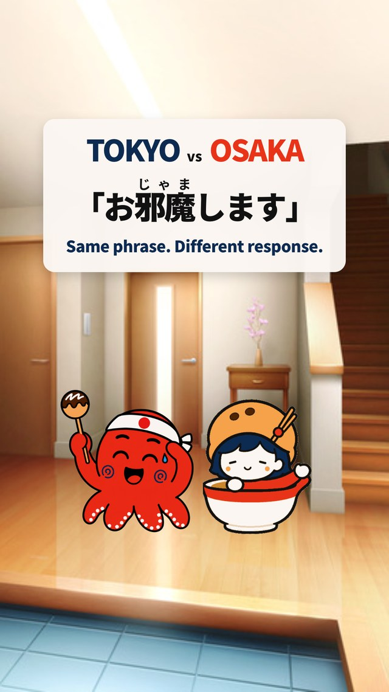
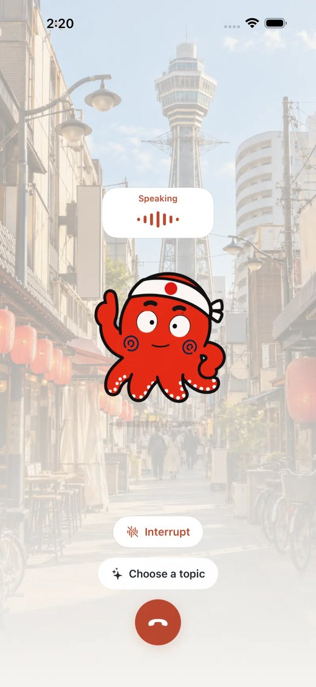
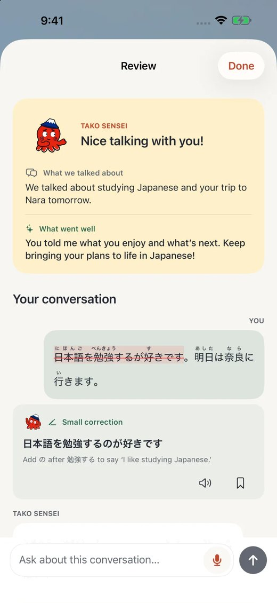
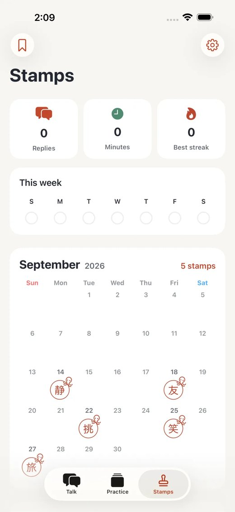
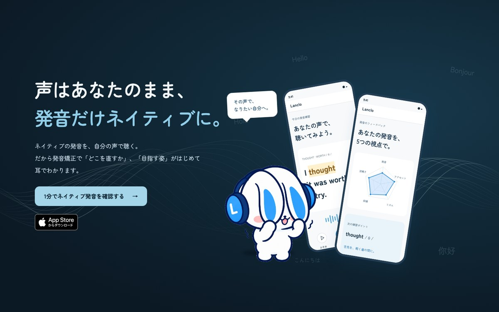
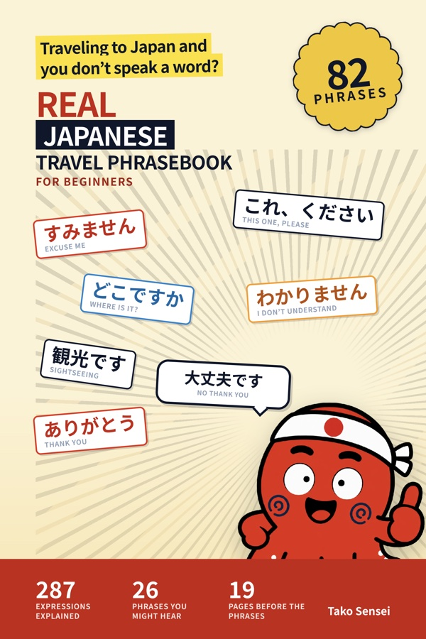
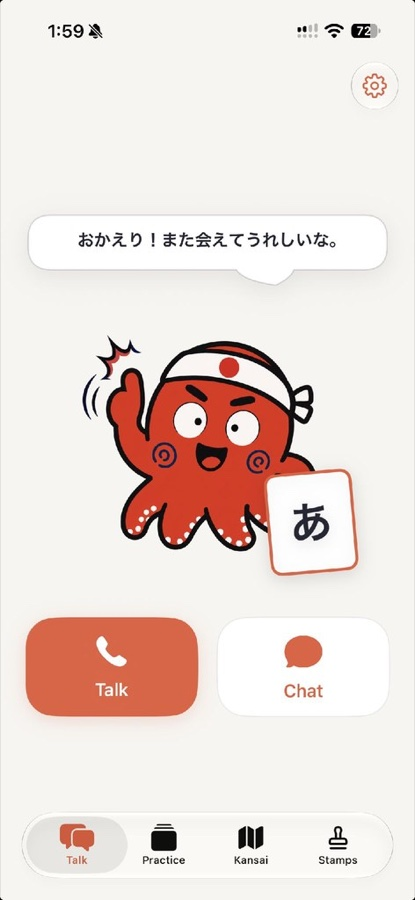
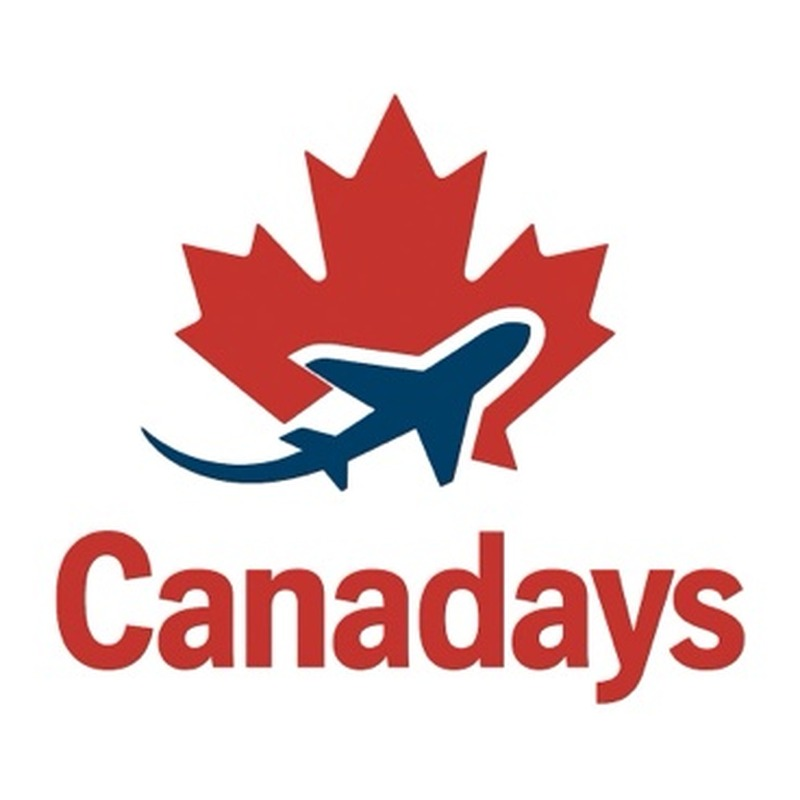

発音クイズ数字の発音の違いをクイズに。答えを知りたくて最後まで見てもらえます

お客様に提案する前に、自分たちで数字を出す。運用代行の実績はこれからですが、「作って、出して、数字を見て、直す」を、本・アプリ・SNSですでに回してきました。
外国人向けに関西弁と標準語の違いを解説。2026年8月開設・週3本・英語＋日本語。投稿に出てくる赤いたこが「たこ先生」です




数値は Instagram の管理画面（インサイト）で確認した値です。それぞれ集計した時点が異なります。企画・制作・投稿・分析まですべて自分たちで。AIで効率化し、人が内容と品質を確認しています。 Instagram で見る →
AI のたこ先生と、毎日5分、日本語で話す練習をするアプリ。企画から開発・公開まで自分たちで



自分の声が、ネイティブのお手本になる発音練習アプリ。海外で暮らし、何度も発音を直された経験から作りました。英語のほか日本語を含む17言語に対応し、Web 版を先行公開しています

公開しているものと、組んでいる会社です。それぞれ実物をご覧いただけます

英語話者向けの「実際に使われる日本語」フレーズ集。旅行・日常・関西弁・仕事をテーマに制作しています。
Amazon で見る
AI のたこ先生と日本語で話す練習をするアプリ。App Store で公開済み（7日間無料）。ひらがな・カタカナの演習アプリもあります。
紹介ページを見る
自分の声がネイティブのお手本になる発音練習アプリ。英語のほか日本語を含む17言語に対応。苦手な音の分析から次の練習文まで AI が用意します。Web 版を先行公開中（7日間無料）。
紹介ページを見る
業務契約を結んでいる会社です。Canadays が主催する言語交換イベントを通じて、日本語を学びたい人と対面でつながっています。
Instagram を見るオンラインで日本語を教えたい方に向けて、始め方、体験レッスンの進め方、料金の決め方などを記事にしています。
note を見るいまお話しできることを、そのまま書いています
飲食店・宿の方にはその店専用の投稿を1本、日本語学校の方には紹介できそうな学生像と進め方を、無料でお出しします。